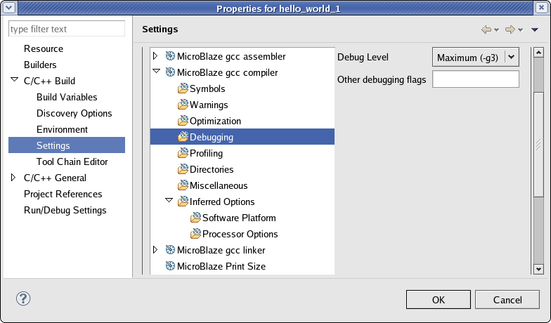
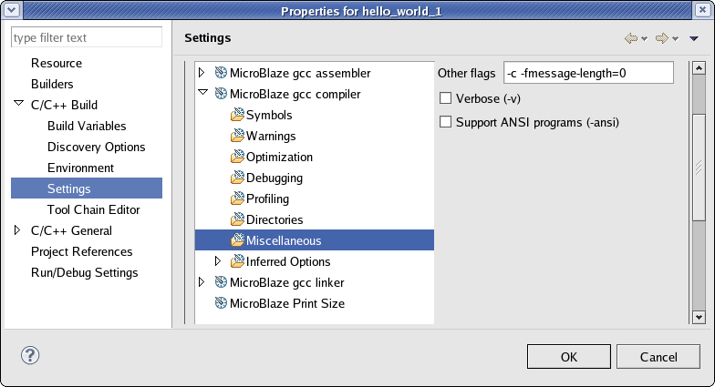

Specifying the compiler options
You can specify the compiler options for Managed Make projects.
Specifying debug and optimization compiler flags
Based on the build configuration selected, SDK
assigns a default optimization level and debug flags for compilation. You can change the default value for your project.
To set properties for your project:
- Right-click your managed make
project and select Properties. Alternatively, to set properties for a
specific source file in your project, right-click a source file within your
standard make project and select Properties.
- Click C/C++ Build to expand the list and click on Settings.
- In the Tool Settings tab, select Optimization to change the optimization level and Debugging to change the debugging level.

Specifying Miscellaneous Compiler Flags
You can specify any
other compiler flags not covered in the Tool Settings for program compilation.
To set properties for your project:
- Right-click your managed make
project and select Properties. Alternatively, to set properties for a
specific source file in your project, right-click a source file within your
standard make project and select Properties.
- Click C/C++ Build to expand the list and click on Settings.
- In the Tool Settings tab, select the Miscellaneous
> Other flags to specify compiler
flags.


SDK application projects

Working with software projects
Copyright © 1995-2011 Xilinx, Inc. All rights reserved.